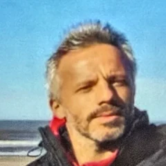
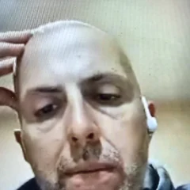
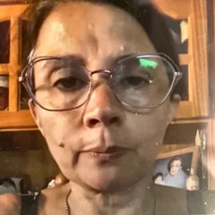
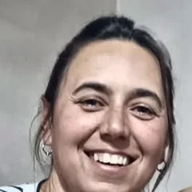

Un curso para transformar lo que te frena en herramientas para crecer.
Quiero empezar →Tenés una meta clara —personal, económica o de tu negocio— pero por más que lo intentás, no avanza. Algo te frena y ni vos sabés bien qué es.
Seguís en relación de dependencia, pensando en armar algo propio, pero no sabés ni por dónde empezar.
Tenés un talento que otros pagarían, pero seguís regalándolo o cobrando de menos — nunca lo convertiste en un negocio de verdad.
Facturás, tenés clientes, el negocio funciona. Pero a fin de mes la caja no da la talla.
Le ponés horas, plata y cabeza a tu negocio, y aun así no crece. Sentís que hay algo que no estás viendo.
Casi siempre lo que traba no está afuera: es algo tuyo que todavía no pudiste atravesar.
Lo que ganás no te rinde, o todavía no sabés cómo generar lo que necesitás. El dinero y tu energía son el combustible de todo lo demás.
Lo que creíste que era tu camino ya no te resuena, o quizás sea tu camino y solo necesites reafirmarlo.
Le ponés el hombro a todo y no arranca, o todavía no te animás a empezar. No sabés si seguir, largar todo o dar el primer paso.
Te ahogás en un vaso de agua: sentís que podés más, pero algo te frena al decidir.
Cedés en lo que te incomoda para quedar bien con los demás, aunque ellos no hacen lo mismo por vos.
Combustible — hábitos, energía y tu relación con el dinero
Rumbo — propósito, dirección y resultados concretos
Arranque — miedo, mente consciente e inconsciente
Confianza — reprogramación y el merecimiento
Vínculos — lealtades invisibles, fortalezas y debilidades
“Estaba muy bloqueada con el dinero. Me ayudó a entender y a amigarme con él. No puedo creer lo aprendido. Abre la mente.”
“Me llevo claridad. Llegué desmantelada, me voy con entusiasmo. Saneé mi economía y redireccioné mi emprendimiento.”
“Después de la mentoría logré renunciar a mi trabajo. Y aprendí que cuento con los recursos para construir mi nuevo camino.”
“Me ayudó mucho, no sólo en el negocio sino en la forma de ver las cosas. En varios aspectos de mi vida me ayudó a cambiar.”

“Mentoría muy constructiva. Me llevo mucho crecimiento y grandes aprendizajes.”

“Sos quien me hizo ver el mundo más allá de lo material. Hiciste que cambiara mi mirada. Me voy muy conforme.”
“Me llevo mucho aprendizaje. Muchas cosas pude resolver. Logré mucha disciplina: mirarme a mí, mirar para adentro.”

“Me sirvió mucho para salir adelante, para priorizarme. Vivía para los demás. Aliento a que se sumen, para romper miedos.”
“Estoy contento. Me pareció muy bueno. Encontré solución. Recomiendo que lo hagan, porque trae soluciones.”
“Mucho aprendizaje he tenido. Hoy soy consciente. Ahora quiero seguir trabajándome. Me interesa mucho.”
“Aprendí mucho. Me gustó mucho. Muy recomendable.”
“Gran aprendizaje. Pude romper cosas y desafiar nuestro subconsciente. Quedé agradecida. Muy recomendable, por supuesto.”
“La mentoría me devolvió mucha confianza. Pude reconectarme con mi propósito. Muy recomendable.”
“Muy revelador, reflexivo. El mentor ha sido un buen líder. Lo recomiendo sin duda, y que lo hagan a tiempo. Muy agradecida.”

“Me gustó mucho. Uno, con lo cotidiano, pierde la consciencia. Lo recomiendo para el bienestar de cada uno.”
“Mucho aprendizaje. Una de las mentorías en las que más información y transformación obtuve. Me gustaría seguir creciendo.”
“Un proceso intenso y profundo, y digo que fue bárbaro. Superé bloqueos y puse en marcha mi estudio.”
“Mi maestro y mentor preferido. Muy inteligente, me encanta, me emociona. Tus palabras son muy sabias. Lo recomiendo.”
“Me sirvió mucho. Quedé realmente sorprendida. Lo recomiendo verdaderamente para quien quiera crecer.”
“Agradecido. Dando mis primeros pasos de emprendedor. Y soltando mi perfeccionismo. Gracias por todo.”
“Muy interesante. Buscaba romper estos bloqueos. Lo recomiendo.”
“Me gustó mucho. Se guía y acompaña a cada persona. Absolutamente recomendable.”
“Quedé muy sorprendida y agradecida. La recomiendo un 100 por 100.”
1 / 23
Testimonios reales / Casos de éxito.
Pago 100% seguro
Si ya sabés que tu caso necesita algo más personalizado, consultá por la mentoría 1 a 1.
Te comunicás directo a mi WhatsApp